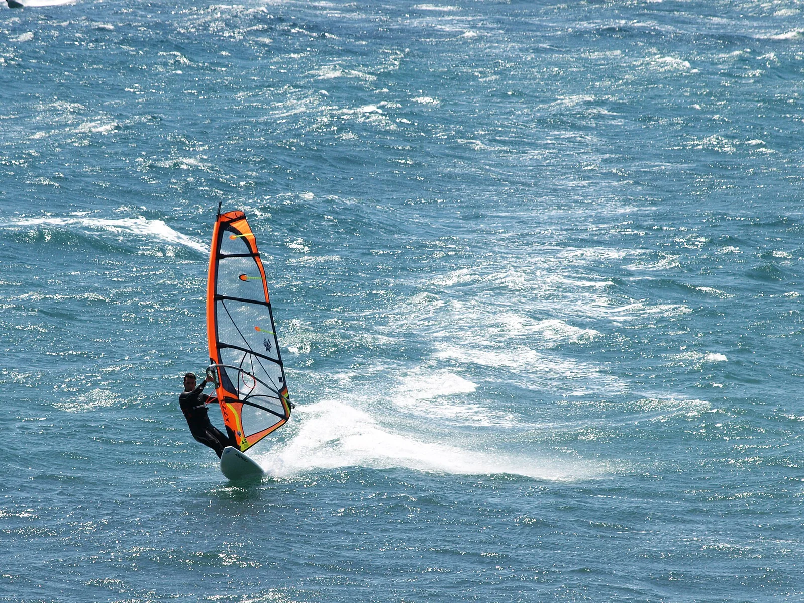

Pozo Izquierdo
Gran Canaria, Espagne · windsurf, kitesurf

Spot de coupe du monde de windsurf : parmi les alizés les plus forts d'Europe et des sauts spectaculaires.
- Lieu
- Gran Canaria, Espagne
- Niveau
- Expert
- Activités
- windsurf, kitesurf
- Type d'eau
- Mer / océan
- Coordonnées
- 27.80, -15.42 (position approximative du secteur)
Dangers à connaître
- Vent très violent (40+ km/h).
- Entrée sur rochers.
Le conseil d'Ocean Buddy
Réservé aux windsurfeurs confirmés, gréements très réduits.
Ouvrir dans Ocean Buddy Télécharger sur l'App Store
Source : Description historique Ocean Buddy · vérification externe en attente.